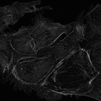
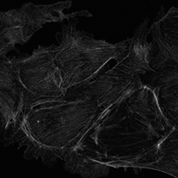
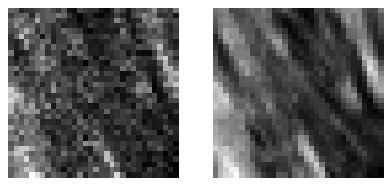
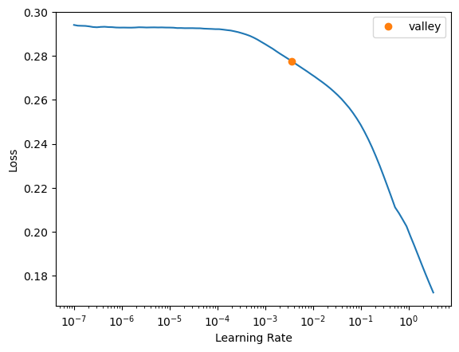

path = Path('../_data/Confocal_BPAE_G')
im3 = Image.open(path/'raw/3/HV110_P0500510000.png')
# show_image(im3);
im3.to_thumb(200)
path = Path('../_data/Confocal_BPAE_G')
im3 = Image.open(path/'raw/3/HV110_P0500510000.png')
# show_image(im3);
im3.to_thumb(200)
fnames = get_image_files(path_train_raw)
print(parent_label(fnames[0]))
Image.open(fnames[0]).to_thumb(200)7get_gt (fn)
dblock = DataBlock(blocks = (ImageBlock(cls=PILImageBW), ImageBlock(cls=PILImageBW)),
get_items = get_image_files,
get_y = get_gt,
splitter = RandomSplitter(valid_pct=0.2),
item_tfms = RandomCrop(32),
)
# dblock.summary(path_train_raw)
# dsets = dblock.datasets(path_train_raw)
# dsets.train[0]
dls = dblock.dataloaders(path_train_raw)
dls.show_batch(max_n=1, cmap='gray')
# from fastai.layers import *
ks = 3
class Autoencoder(nn.Module):
def __init__(self):
super(Autoencoder, self).__init__()
# Input size: [batch, 3, 32, 32]
# Output size: [batch, 3, 32, 32]
self.encoder = nn.Sequential(
ConvLayer(1, 12, ks=ks), # [batch, 12, 16, 16]
ConvLayer(12, 24, ks=ks), # [batch, 24, 8, 8]
ConvLayer(24, 48, ks=ks), # [batch, 48, 4, 4]
)
self.decoder = nn.Sequential(
ConvLayer(48, 24, ks=ks, transpose=True, padding=(ks-1)//2), # [batch, 24, 8, 8]
ConvLayer(24, 12, ks=ks, transpose=True, padding=(ks-1)//2), # [batch, 12, 16, 16]
ConvLayer(12, 1, ks=ks, transpose=True, padding=(ks-1)//2, act_cls=None), # [batch, 3, 32, 32]
nn.Sigmoid(),
)
def encode(self, x): return self.encoder(x)
def decode(self, x): return self.decoder(x)
def forward(self, x):
encoded = self.encoder(x)
decoded = self.decoder(encoded)
return x - decodedautoencoder = Autoencoder()
learn = Learner(dls, autoencoder, loss_func = F.mse_loss)
learn.lr_find()
# learn.modelSuggestedLRs(valley=0.00363078061491251)
| epoch | train_loss | valid_loss | time |
|---|---|---|---|
| 0 | 0.242263 | 0.217057 | 00:08 |
| 1 | 0.218135 | 0.215167 | 00:08 |
| 2 | 0.181392 | 0.103382 | 00:08 |
| 3 | 0.139135 | 0.034893 | 00:07 |
| 4 | 0.104895 | 0.067672 | 00:08 |
| 5 | 0.086412 | 0.898298 | 00:07 |
| 6 | 0.067680 | 0.386272 | 00:07 |
| 7 | 0.053014 | 0.006070 | 00:08 |
| 8 | 0.041790 | 0.005546 | 00:08 |
| 9 | 0.033191 | 0.004940 | 00:07 |
| 10 | 0.026620 | 0.004496 | 00:08 |
| 11 | 0.021554 | 0.004165 | 00:07 |
| 12 | 0.017603 | 0.003920 | 00:08 |
| 13 | 0.014524 | 0.003739 | 00:08 |
| 14 | 0.012121 | 0.003611 | 00:08 |
| 15 | 0.010228 | 0.003522 | 00:07 |
| 16 | 0.008747 | 0.003467 | 00:08 |
| 17 | 0.007575 | 0.003437 | 00:07 |
| 18 | 0.006670 | 0.003425 | 00:08 |
| 19 | 0.005962 | 0.003423 | 00:07 |